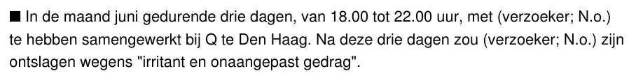
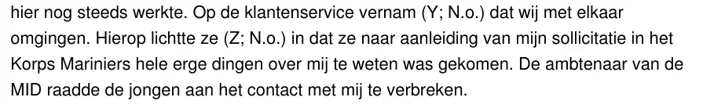

Prueba · Informe
Informe 1999/507 del Defensor del Pueblo de los Países Bajos, 17 de diciembre de 1999
El ensayo remite a la declaración sobre el presunto despido, en la página 12, y la sección de voces, a la calificación «completamente loco», en la página 13. Ambas figuran en el mismo informe de la entrevista. El tercer pasaje procede del propio escrito de Giltay, en las páginas 8–10; el ensayo se apoya en él en cuanto al alcance de su queja.
La declaración sobre el presunto despido
«Haber trabajado durante tres días del mes de junio, de 18.00 a 22.00, con (el solicitante; N.o.) en Q, en La Haya. Tras esos tres días, (el solicitante; N.o.) habría sido despedido por “comportamiento irritante e inadaptado”». Página 12, apartado C.5, la primera declaración del informe de la entrevista del 11 de febrero de 1999 con la antigua empleada del MID, tras la fórmula introductoria «Y verklaarde:» («Y» declaró). La declaración figura como punto de una enumeración; aquí se ha omitido la viñeta. En la anonimización del informe, «Q» designa a la empresa de cable Casema. Traducido del neerlandés; el texto original figura a continuación.
“In de maand juni gedurende drie dagen, van 18.00 tot 22.00 uur, met (verzoeker; N.o.) te hebben samengewerkt bij Q te Den Haag. Na deze drie dagen zou (verzoeker; N.o.) zijn ontslagen wegens ‘irritant en onaangepast gedrag’.” Texto original

«Completamente loco»
«Que ella compartía la opinión de sus colegas de Q de que (el solicitante; N.o.) estaba “completamente loco”». Página 13, apartado C.5, del mismo informe de la entrevista, que el ministro de Defensa presentó como parte de su posición. «N.o.» señala una inserción editorial del Defensor del Pueblo; el informe sustituye Casema por «Q» y al reclamante por «verzoeker» (solicitante). Se ha omitido la viñeta. Traducido del neerlandés; el texto original figura a continuación.
“Zij de mening van haar Q collegae deelde dat (verzoeker; N.o.) ‘volledig gestoord’ was.” Texto original
De qué se quejaba Giltay
«En el servicio de atención al cliente, (Y; N.o.) se enteró de que nos veíamos. A raíz de ello informó a (Z; N.o.) de que, con motivo de mi solicitud de ingreso en el Cuerpo de Infantería de Marina, se había enterado de cosas muy graves sobre mí. La funcionaria del MID aconsejó al chico que rompiera el contacto conmigo. […] Presento este escrito para que el Servicio de Inteligencia Militar no sobrepase los límites de sus competencias. Mi queja critica la profesionalidad de una rama de las Fuerzas Armadas que parece receptiva a la difamación y la calumnia». Páginas 8, 9 y 10, apartado B.2, del escrito de Giltay tal como lo cita el Defensor del Pueblo bajo «Standpunt verzoeker» (posición del solicitante). Las tres primeras frases figuran en la página 8, las dos últimas en las páginas 9 y 10; los puntos suspensivos entre corchetes […] sustituyen la parte intermedia del escrito. En la anonimización del informe, «Y» es la empleada del MID, «Z» un antiguo colega del reclamante y «Q» la empresa de cable Casema; «N.o.» señala una inserción editorial del Defensor del Pueblo. Las líneas se han unido aquí. Traducido del neerlandés; el texto original figura a continuación.
“Op de klantenservice vernam (Y; N.o.) dat wij met elkaar omgingen. Hierop lichtte ze (Z; N.o.) in dat ze naar aanleiding van mijn sollicitatie in het Korps Mariniers hele erge dingen over mij te weten was gekomen. De ambtenaar van de MID raadde de jongen aan het contact met mij te verbreken. […] Ik dien dit verzoekschrift in opdat de Militaire Inlichtingendienst de grenzen van zijn bevoegdheden niet overschrijdt. Mijn klacht bekritiseert de professionaliteit van een krijgsmachtdeel dat ontvankelijk lijkt te zijn voor smaad en laster.” Texto original

Por qué importa este documento
En diciembre de 1998, Giltay acudió al Defensor del Pueblo de los Países Bajos (Nationale ombudsman) con una queja sobre su rechazo por la Marina Real neerlandesa y sobre el papel del Servicio de Inteligencia Militar (MID). Su escrito trataba también de lo que una funcionaria del MID en la empresa de cable Casema había contado sobre él a un antiguo colega. Giltay mantenía entonces una relación con ese antiguo colega, tal como lo describe en su libro (libro electrónico, edición inglesa, p. 50); el consejo de romper el contacto afectaba, por tanto, a su vida privada. El Defensor del Pueblo, en su propia formulación de la queja, la redujo a la tramitación de la candidatura.
El ministro de Defensa respondió con una posición que el Defensor del Pueblo recoge en este informe público, incluido el informe de una entrevista con la antigua empleada del MID (Barbara Overduyn, a quien el informe no nombra). Ella declaró que Giltay habría sido despedido de Casema, donde trabajaba cedido por la empresa de trabajo temporal Randstad Callflex, por un comportamiento «irritante e inadaptado», y que compartía la opinión de sus colegas de que él estaba «completamente loco». El ensayo señala que esta calificación sigue hoy en línea en este informe, a pesar de considerables pruebas en contrario. Así, la evaluación que Defensa hizo de Giltay en 1998 constató en él un carácter fuerte.
Procedencia
- Documento
- Informe 1999/507 del Defensor del Pueblo de los Países Bajos, 18 páginas
- Fecha
- 17 de diciembre de 1999
- Queja
- Solicitud recibida el 2 de diciembre de 1998; el informe anonimiza al reclamante como «de heer X» (el señor X) y, en adelante, como «verzoeker» (el solicitante)
- Asunto
- La tramitación de una candidatura a un puesto de oficial en la Marina Real neerlandesa, y las afirmaciones de que el servicio de Reclutamiento y Selección de Defensa había alegado indebidamente el consumo de drogas como motivo de rechazo y de que el Servicio de Inteligencia Militar había introducido en una fase temprana información comprometedora en el procedimiento de selección
- Pasajes
- Apartado C.5, la posición del ministro de Defensa, páginas 12 y 13; apartado B.2, la posición del solicitante, páginas 8–10
- Fuente de los pasajes
- Apartado C.5: informe de una entrevista del 11 de febrero de 1999 con la antigua empleada del MID, presentado por el ministro como parte de su posición. Apartado B.2: el escrito del reclamante
- Delegación de firma
- La posición la expuso en nombre del ministro el secretario general Barth, por carta del 2 de marzo de 1999, y se considera la del ministro de Defensa, Frank de Grave, que es responsable de ella. Por eso la cita de la sección de voces se le atribuye a él
- Constataciones
- Ambas partes de la queja se declararon infundadas; en ambos puntos, la actuación investigada se consideró correcta
- Expediente
- 1998.07789, tomado del nombre del archivo publicado; el informe mismo no lo indica
- Idioma
- Neerlandés
- Editorial
- Defensor del Pueblo de los Países Bajos, La Haya, en nationaleombudsman.nl
- Copia archivada
- Wayback Machine, 9 de septiembre de 2026
- Véase también
- Investigación interna para el jefe de Estado Mayor del MID, 12 de febrero de 1999Defensa al Defensor del Pueblo de los Países Bajos sobre Giltay, 7 de octubre de 1999Declaración de un colega de Casema sobre Barbara Overduin, 10 de junio de 1999
Citado en:
- el ensayo «La prohibición cayó, el libro quedó en pie» en los capítulos (3) «Lo que revela el libro: el encubrimiento en torno a Srebrenica», (7) «Ninguna respuesta sobre el fondo» y (10) «Grietas en el muro» y en la diapositiva «Defensor del Pueblo de los Países Bajos · 1999» de la presentación «La historia en el mapa»
- la sección de voces bajo el epígrafe «Psiquiatrización indebida»
- la biografía del autor.
Documento: https://
Copia archivada: https://
Consultado el 27 de noviembre de 2026.

Esta página es una ficha de prueba del libro El general del encubrimiento de Edwin Giltay y del sitio web que lo acompaña.